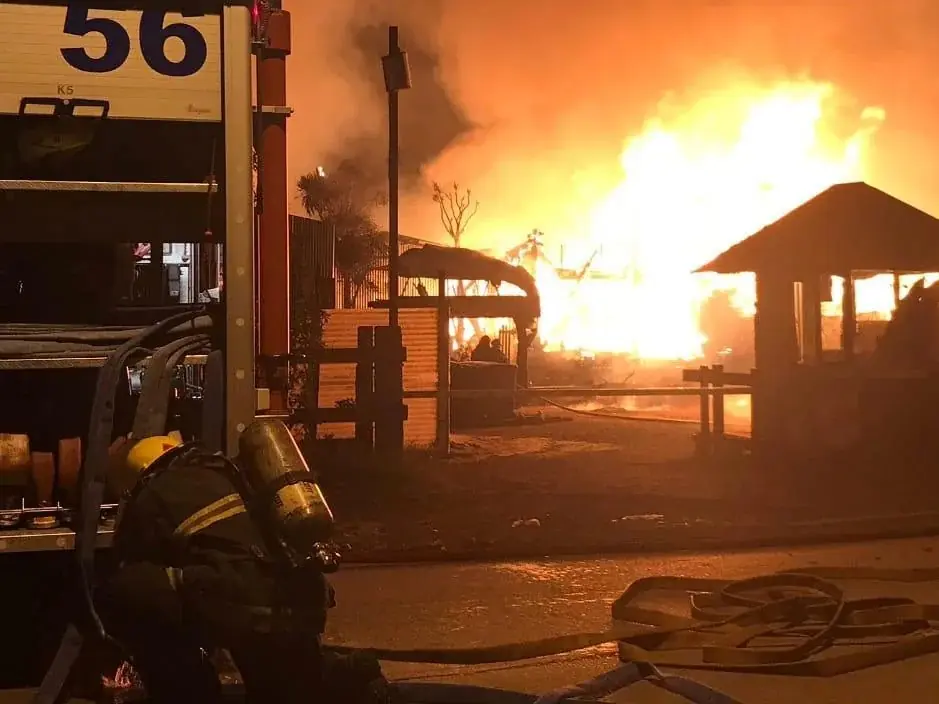

Incendios
Intervenciones ante incendios estructurales, vehiculares, forestales y otros escenarios que requieren tareas de extinción y protección.

Compromiso, vocación y servicio. Una labor que continúa más allá de cada emergencia.
Ser bombero voluntario es mucho más que responder a una emergencia. Es estar preparado, trabajar en equipo y dedicar tiempo al servicio de los demás.
El Cuerpo Activo interviene ante diferentes situaciones que requieren una respuesta organizada, personal capacitado y equipamiento especializado.
Intervenciones ante incendios estructurales, vehiculares, forestales y otros escenarios que requieren tareas de extinción y protección.
Operaciones de rescate y asistencia en siniestros viales, situaciones de atrapamiento y lugares de difícil acceso.
Asistencia ante situaciones que pueden comprometer la seguridad de las personas, los bienes o el entorno.
La preparación para una emergencia comienza mucho antes de que suene la alarma.
Las actividades cotidianas dentro de los cuarteles forman parte fundamental del funcionamiento de nuestra institución.
El mantenimiento de vehículos, la revisión de materiales, la organización del equipamiento y las tareas operativas permiten conservar los recursos en condiciones para su utilización.
Este trabajo, desarrollado por el personal de la institución, constituye una parte esencial del servicio que se brinda a la comunidad.
El Cuartel Central y los dos destacamentos conforman la estructura operativa de Bomberos Voluntarios de San Isidro.
Detrás de cada intervención existe un compromiso que se construye día a día, a través del esfuerzo, la responsabilidad y el trabajo conjunto de nuestros bomberos.
Desde 1939, al servicio de nuestra comunidad.